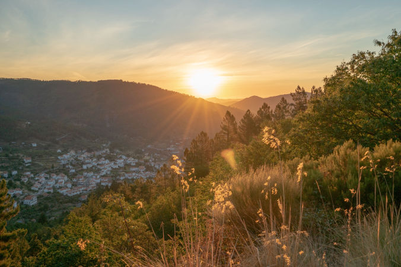

Looking for a videographer Portugal who can bring your story to life? We’re Katy and Eugene, experienced videographers in Portugal capturing stories across Lisbon, Porto, Coimbra, the Algarve, and Serra da Estrela. From artisans and retreats to brands and social causes, we focus on real, personal filmmaking, relaxed, natural, and grounded in purpose. In a world full of noise, it’s easy for the good stuff to get lost, which is why our videographer Portugal services help brands tell their stories clearly and honestly through video. Whether you’re after a brand film, some scroll-stopping social media clips, or want to learn how to make videos yourself, we make the process simple and enjoyable. Storytelling that helps your work connect with the people who need to see it.
Book a free consultation here.
Who we are: Katy and Eugene, passionate videographer Portugal professionals capturing authentic stories.
Why choose us: A small, experienced videographer Portugal team offering personal attention, flexible collaboration, and deep knowledge of Portugal’s unique filming locations.
What we offer: High-quality videos with easy communication, creative collaboration, relaxed filming, and polished delivery tailored to your goals.
Who we work with: From social impact orgs, eco brands, artisans, and event organizers to businesses and startups, our services adapt to every story.
Getting started: Reach out at katy@munjiri.com.
From the cliffs of the Algarve to the streets of Lisbon, from the valleys of the Douro to the quiet beauty of Serra da Estrela, videographer Portugal services can bring these incredible locations to life on screen. When you work with a small, experienced videographer Portugal team like ours, you get personal attention, easy-going collaboration, and filmmakers who truly know how to capture Portugal’s light, colors, and atmosphere, all while keeping the focus where it matters most: telling your story clearly and with heart.
We capture stories across Portugal, bringing your vision to life wherever your project takes us. Our team specializes in filming in a wide range of locations, combining local knowledge with cinematic storytelling:
Lisbon & Sintra – From the vibrant streets of Lisbon to the historic beauty of Sintra, we create engaging videos that showcase both urban energy and cultural charm.
Porto & Northern Portugal – We capture the stunning landscapes, rivers, and architecture of Porto and northern Portugal, giving your brand a unique regional perspective.
Central Portugal & Serra da Estrela – From artisan workshops to the tranquil mountains of Serra da Estrela, our videography highlights the heart of Portugal’s traditions and natural beauty.
Algarve & Alentejo – Sun-soaked coastlines, rolling hills, and serene countryside are brought to life with our professional videography services across the Algarve and Alentejo regions.
Easy Communication
As your trusted videographer Portugal partner, we start with a relaxed conversation to get a clear sense of your goals, audience, and story. Whether you're based in Portugal or abroad, we're easy to reach and happy to guide the process from start to finish.
Creative Collaboration
Working with our videographer Portugal team means you’re involved from the start, sharing ideas, reviewing drafts, and helping shape the story. We keep things open, flexible, and collaborative so your vision always comes through.
Relaxed Filming
From the cliffs of the Algarve to the cafés of Lisbon or the forests of Sintra, our videographer Portugal approach creates a calm, friendly environment so you feel comfortable on camera and enjoy the process.
Professional Quality
We use high-end cameras, audio, lighting, and drones as part of our videographer Portugal services to capture stunning visuals that feel cinematic yet real, always focused on your message.
Smooth Delivery
Your final video will be polished, on-brand, and delivered in the formats you need for web, social media, or presentations, plus tips from our videographer Portugal team on how to get it seen.
"Wow! We have a video. Thank you Katy & Eugene of Munjiri Videos, working with you two was just about the easiest collaborative process I could have ever imagined. You were incredibly relaxed (especially for being new parents) and professional. I look forward to continuing to work with Munjiri Videos as the school continues to grow."
Olivia Fite, Collective Wonder Herb School
“Working with Katy from Munjiri Videos has been a great experience from start to finish. She understood what I was looking for straight away, and guided me (as someone new to commissioning video) content through deciding what to include and creating a script, and made me feel as relaxed as possible during the filming. It was such a pleasure working with her, and the results are fantastic- just what I was looking for. I wouldn’t hesitate to hire Munjiri Videos again, and really hope to work with Katy in the future.”
Flora Collingwood-Norris, Collingwood-Norris


Social Impact Organizations
From NGOs to grassroots initiatives, our videographer Portugal services help mission-driven teams tell powerful stories that inspire change and support. Whether you’re focused on education, community, health, or equality, we’ll help your impact shine.
Nature and Eco Brands
We partner with eco-conscious brands, regenerative farms, and outdoor projects to capture the beauty of nature and the work you’re doing to protect it. Our goal is to film in a way that’s respectful, real, and rooted in your values.
Creative Makers and Artisans
We love telling the stories behind your craft. Whether you're designing jewellery, hand-weaving textiles, or making small-batch skincare, our approach highlights the passion and process that sets your work apart.
Event Organizers
Whether it’s a wellness retreat, workshop, or launch event, our videographer Portugal services capture the atmosphere, energy, and key moments to create memorable content you can share and repurpose.
Businesses and Startups
If you're building something meaningful from the ground up, our videographer Portugal team is here for it. We create video content that helps you connect with your audience, build trust, and grow.


We provide videographer Portugal event services across Lisbon and other regions of the country, perfect for weddings, corporate events, festivals, and retreats. Whether you’re planning an intimate gathering or a large celebration, our videographer Portugal team captures the energy and emotion that make your event unforgettable.
As experienced drone videographer Portugal specialists, we offer amazing aerial footage to add cinematic perspectives to your videos. If you’re curious about wedding videographer Portugal costs, we provide quotes to suit your budget without compromising quality.
Whether you need a one-off project or ongoing video content, we’d love to hear about your vision. Drop us a line at katy@munjiri.com and let’s chat about how we can help bring your story to life here in Portugal.


Q: What areas of Portugal do you cover for filming?
A: We’re based here and love filming across the country, from Lisbon, Porto, and the Algarve to the Alentejo, Douro Valley, and Serra da Estrela. We’re happy to travel to wherever your story takes us.
Q: What types of videography do you offer?
A: Our videographer Portugal services cover a wide range of projects, including brand storytelling, social media content, drone filming, events, product videos, and creative or cause-driven films. Everything is tailored to your goals and style.
Q: Can you help plan the video or do I need a script?
A: Yes! We guide you through every step. Our team can help shape the concept, create a script (if needed), and design the visual approach based on your goals.
Q: How long does a typical shoot take?
A: It depends on the project, but most shoots can be completed in 2–3 days. We’ll advise on timing during planning so everything runs smoothly.
Q: What kind of equipment do you use?
A: Our services use professional cinema cameras, lenses, audio gear, lighting, and drones, chosen to give your video a natural, polished, and cinematic feel.
Q: How much does hiring a videographer in Portugal cost?
A: Pricing varies depending on scope, location, and deliverables. We provide custom quotes for our videographer Portugal services and are happy to work with different budgets.
Q: Do you also handle editing and delivery?
A: Yes! Our team handles the full process, from shooting to editing and final delivery, so your finished video is ready for your website, social media, or any platform you need.
Q: Do you work with international clients visiting Portugal?
A: Absolutely. We often work with international clients booking videographer Portugal services for events, retreats, or content shoots. We help you plan ahead so everything’s ready when you arrive.
Q: Do you offer drone videography services in Portugal?
A: Yes! We’re experienced drone specialists, capturing stunning aerial footage to add a unique perspective to your videos.
Q: Do you also offer photography alongside videography?
A: While our main focus is video, our team can also provide photography services when needed.


Brand Video Production
Social Media Video Production
Nature Video Production
Creative Video Productions
Charity Video Production
Drone Videographer
Event Video Production
Product Video Production
Travel Video Production
Learn Video Making
Video Storytelling
Video Making Tips
Video Marketing & Social Media Strategies
Nature Stories
Behind the Scenes
Client Stories
Locations & Travel
Location
Based in Portugal and South Africa, offering video production services worldwide.
Email: katy@munjiri.com
Get updates and free resources.